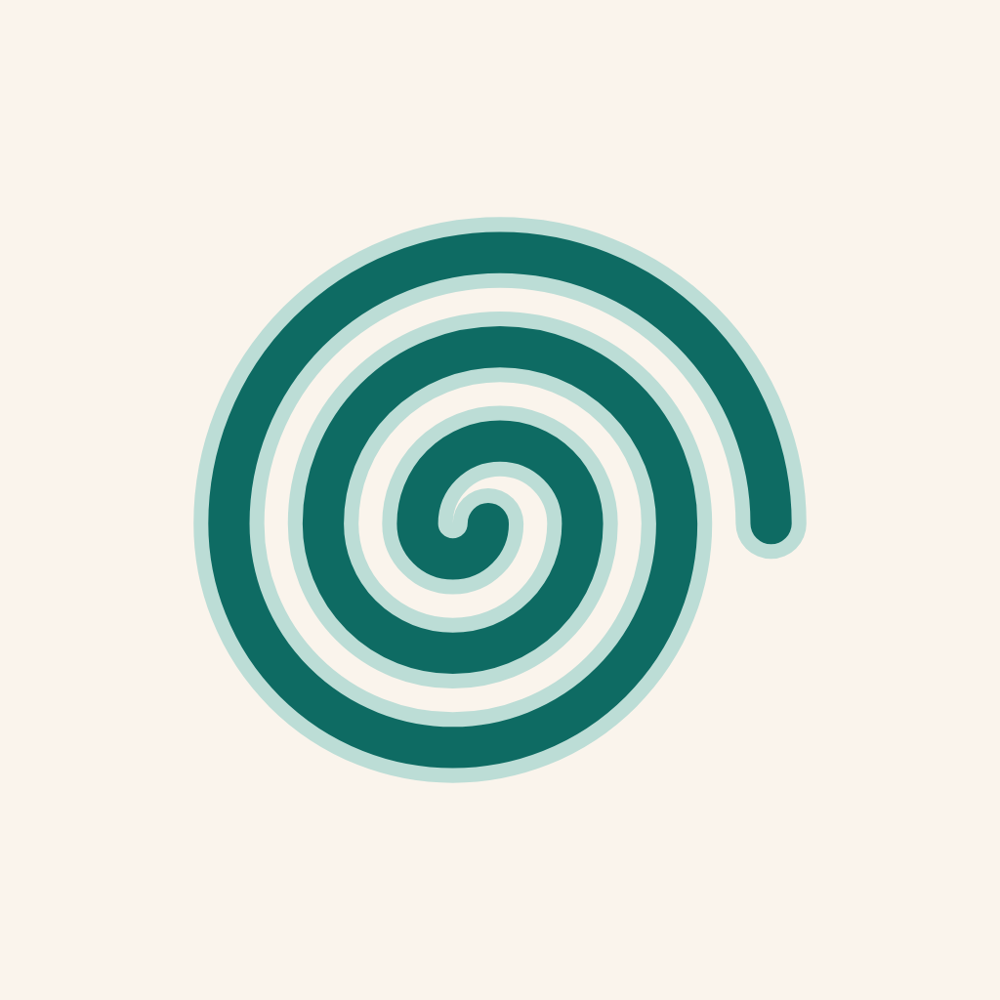

OnduInformativa sulla privacy
Ultimo aggiornamento: 21 ottobre 2026
Ondu è un diario per capelli ricci: registri i lavaggi, i prodotti che usi e le visite dal parrucchiere, e provi i prodotti con degli esperimenti. Questa pagina spiega quali dati usa l'app, dove finiscono e come cancellarli.
Chi è il titolare
Ramona Ruoppo, che sviluppa Ondu a titolo personale. Per qualsiasi domanda sulla privacy: ramonaruoppo.rr@gmail.com.
In breve
- Niente pubblicità, niente profilazione, niente statistiche d'uso: non vendiamo né condividiamo i tuoi dati.
- I dati sono prima di tutto sul tuo telefono. Una copia va nel cloud (Google Firebase, server in Europa) per non perderli e ritrovarli su un altro telefono.
- Le foto originali restano sul telefono: nel cloud va solo una miniatura, senza posizione né altri dati nascosti.
- Puoi esportare tutto ed eliminare tutto dall'app, quando vuoi.
Quali dati
| Cosa | Perché |
|---|---|
| Risposte iniziali: tipo di capelli, obiettivi, prodotti che hai in casa | Personalizzare l'app e gli esperimenti |
| Lavaggi: data, prodotti usati, sensazioni (per esempio "definiti", "crespi") | Il diario e il confronto degli esperimenti |
| Foto dei lavaggi, se le aggiungi | Vederle nel diario. Sul telefono resta l'originale; nel cloud una miniatura (640 px) senza dati EXIF: niente posizione, data di scatto o modello del telefono |
| Visite dal parrucchiere: data, servizi, note | Il diario |
| Prodotti dell'armadietto: nome, marca, categoria, prezzo, codice a barre | L'armadietto e gli esperimenti |
| Esperimenti e verdetti | Capire quali prodotti funzionano per te |
| Lingua e promemoria del lavaggio | Restano solo sul telefono |
| Un identificativo anonimo dell'account; se accedi con Google, anche nome, indirizzo email e immagine del profilo Google | Tenere separato il tuo spazio nel cloud e ritrovarlo su un altro telefono |
Le note e le sensazioni sono scritte da te: evita di inserire informazioni che non vuoi salvare.
Base giuridica
Usiamo i dati per fornirti il servizio che hai chiesto aprendo e usando l'app (art. 6, par. 1, lett. b del GDPR). L'accesso con Google è facoltativo.
Dove finiscono e chi li tratta
- Sul tuo telefono, nella memoria dell'app. Possono finire nel backup del telefono (iCloud o Google) se lo hai attivo.
- Google Firebase (Google Ireland Limited), che ci fornisce il database (Cloud Firestore, server nell'Unione Europea) e gli account (Firebase Authentication). Google tratta i dati per nostro conto. Alcuni dati dell'account possono essere trattati anche fuori dall'UE, con le garanzie previste dal GDPR (clausole contrattuali tipo e EU-U.S. Data Privacy Framework). Privacy di Firebase.
- Open Beauty Facts: quando scansioni un codice a barre, l'app chiede il nome del prodotto a questo database libero. Riceve solo il codice a barre (e, come ogni sito, l'indirizzo IP), non chi sei. Privacy di Open Beauty Facts.
Il promemoria del lavaggio è una notifica programmata sul telefono: non passa da nessun server.
Per quanto tempo
Finché usi l'app. Se elimini un lavaggio, una foto o un prodotto, sparisce anche dal cloud. Con "Elimina i miei dati" o "Elimina account" cancelliamo tutto subito; senza connessione la cancellazione nel cloud si completa appena il telefono torna online.
I tuoi diritti
Puoi accedere ai tuoi dati, correggerli, cancellarli, chiederne la portabilità, opporti o limitare il trattamento. Molto lo fai direttamente nell'app:
- Profilo → Esporta i miei dati: un file con diario, prodotti ed esperimenti.
- Profilo → Elimina i miei dati o Elimina account: come funziona.
Per il resto scrivi a ramonaruoppo.rr@gmail.com. Puoi anche presentare reclamo al Garante per la protezione dei dati personali.
Minori
Ondu non è pensata per chi ha meno di 14 anni.
Sicurezza
Ogni account può leggere e scrivere solo il proprio spazio nel cloud. I dati viaggiano cifrati tra il telefono e i server.
Modifiche
Se questa informativa cambia, la nuova versione è pubblicata qui con la data aggiornata in alto.